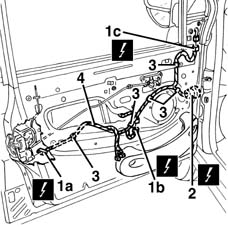

5505B10 front door wiring - r r
- Path
- Procedures > 55 ELECTRICAL EQUIPMENT > 5505 INSTRUMENT/GUAGE ELECTRICAL WIRING > 5505B door,boot and bonnet wiring. > 5505B10 front door wiring - r r
- Kind
- repair procedure (removal / refitting; the operation number is the code)
- Applies to
- all engines; all production periods
- Interactive page
- https://sloeber94.github.io/elrnDB-fMltpl/en/#/2891871
Applies to: all engines; all production periods
 Removing
Removing
 Refitting
Refitting7005D22 front side door descending window glass guide (one) - r r with door panel (and support frame) removed (rear guide)
1. Disconnect the electrical connections from the door lock (1a), the electric windows motor (1b) and the rear view mirror (1c).
 | Name | Connector |
|---|---|---|
1a | Front door lock gear motor left |
| Name | Connector |
|---|---|---|
1a | Front door lock gear motor right |
| Name | Connector |
|---|---|---|
1b | Front electric window motor left |
| Name | Connector |
|---|---|---|
1b | Front electric window motor right |
| Name | Connector |
|---|---|---|
1c | Left door mirror |
| Name | Connector |
|---|---|---|
1c | Right door mirror |
2. Disconnect the door wiring electrical connection.
| Name | Connector |
|---|---|---|
2 | Front door junction left |
| Name | Connector |
|---|---|---|
2 | Front door junction right |
3. Disconnect the cable loom retaining springs from the door.
4. Extract the cable loom from the door frame.

Applies to: all engines; all production periods
Refitting
RemovingCheck that the wiring is undamaged and that the individual conductors are firmly attached to the connections.
Check that the connections are fitted with anti-slip devices (secondary lock).
If necessary, check the continuity.
Insert the cable loom in its housing inside the door housing.
Attach the cable loom retaining springs to the door frame.
Connect the electrical connections.
Check the operation of the electrical components connected.
7005D22 front side door descending window glass guide (one) - r r with door panel (and support frame) removed (rear guide)
Topics linked from this page (9)
- 7005D22 front side door descending window glass guide (one) - r r with door panel (and support frame) removed
- D31 Front door junction right
- D030 Front door junction left
- N50 Front door lock gear motor left
- N51 Front door lock gear motor right
- N60 Front electric window motor left
- N61 Front electric window motor right
- P60 Left door mirror
- P61 Right door mirror